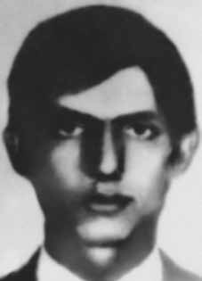

Antônio
Sérgio
de Mattos
CIRCUNSTÂNCIAS DA MORTE
Antônio Sérgio de Mattos morreu no dia 23 de setembro de 1971 na cidade de São Paulo, em uma ação realizada pelas forças de segurança nacional.
Nesta data, Antônio Sérgio de Mattos, Manoel José Nunes Mendes Abreu, Ana Maria Nacinovic Corrêa e Eduardo Antônio da Fonseca, todos militantes da ALN, foram vítimas de uma emboscada engendrada pelos órgãos de segurança na Rua João Moura, na altura do n o 2.358, no bairro do Sumarezinho, na cidade de São Paulo. Os órgãos da repressão colocaram na rua um jipe do Exército, aparentemente com problemas, estando os soldados parados à volta portando metralhadoras. Os agentes do DOI-CODI/SP ficaram escondidos em um caminhão baú do jornal Folha de São Paulo. Do ardil resultou a morte de três dos quatro militantes, incluindo Antônio Sérgio de Mattos. Ana Maria Nacinovic Corrêa conseguiu escapar sem ser presa, sendo morta no ano seguinte, em 14 de junho de 1972.
A versão oficial registrou que os três militantes morreram no local, ao tentar assaltar o jipe. As requisições de exame necroscópico ao IML foram assinadas pelo delegado do DOPS/SP, Alcides Cintra Bueno Filho, e os laudos necroscópicos pelos legistas Isaac Abramovitc e Antônio Valentini. Esses documentos já apresentam contradições em relação à versão oficial de morte tendo em vista a diferença de horário que teriam sido encontradas as vítimas: Antônio Sérgio e Manoel teriam sido encontrados mortos às 16 horas, enquanto Eduardo teria sido às 15h. Os corpos dos três deram entrada no Instituto Médico-Legal (IML) às 18h40, apesar do local do tiroteio ser muito próximo à sede do IML.
Deve-se registrar que não foi realizada perícia no local, tendo Suzana Keniger Lisbôa afirmado na 117ª audiência da Comissão da Verdade do Estado de São Paulo Rubens Paiva, no dia 19 de março de 2014, que “houve […] uma emboscada em que os órgãos de segurança se prepararam para matar, eles se organizaram para matar. E fica mais estranho ainda saber que eles não tenham feito isso de forma contínua, realizando, por exemplo, a perícia de local, mostrando as armas nas mãos de cada um dos militantes […]”. No laudo de Antônio Sérgio, os legistas relataram dois ferimentos à bala no pescoço e na traqueia, para além de ferimentos causados por instrumento não descrito, que não arma de fogo, mas que levam a supor que tenham sido feitos com proximidade física do agressor. A foto do corpo de Antônio Sérgio mostra apenas o rosto, com o tórax encoberto, e um objeto junto ao pescoço, que se assemelha a um gancho. O laudo de Eduardo apresentava dois tiros na região glútea e dois nas pernas capazes de imobilizá-lo, mas não de provocar a morte imediata. Manuel apresentava orifício de entrada de projétil de arma de fogo na face dorsal da mão direita, característico de reação instintiva de defesa para disparos à queima-roupa, e, ainda, um orifício de entrada de projétil na altura da omoplata esquerda e saída na face anterior do hemotórax esquerdo, tiro dado de cima para baixo e, pela descrição da trajetória, de onde se pode inferir que fora dado quando estava dominado e de joelhos, apresentando, ainda, escoriações nos dois joelhos e no nariz, que foram anotadas pelos legistas. A foto de Manuel José mostra evidentes sinais de tortura.
Antônio foi enterrado como indigente no Cemitério D. Bosco, em Perus, na capital paulista. Em 1975, sua família conseguiu retirar seus restos mortais e trasladá-los para o Rio de Janeiro, onde foi sepultado no sítio de seus pais em Macaé.
Antônio Sérgio de Mattos died on September 23, 1971 in the city of São Paulo, in an action carried out by national security forces.
On this date, Antônio Sérgio de Mattos, Manoel José Nunes Mendes Abreu, Ana Maria Nacinovic Corrêa and Eduardo Antônio da Fonseca, all ALN militants, were victims of an ambush engineered by security agencies on Rua João Moura, at number 2,358, in the Sumarezinho neighborhood, in the city of São Paulo. The repression agencies put an Army jeep on the street, apparently in trouble, with soldiers standing around carrying machine guns. DOI-CODI/SP agents were hidden in a box truck belonging to the newspaper Folha de São Paulo. The ruse resulted in the death of three of the four militants, including Antônio Sérgio de Mattos. Ana Maria Nacinovic Corrêa managed to escape without being arrested, being killed the following year, on June 14, 1972.
The official version recorded that the three militants died on the spot, while trying to rob the jeep. The necroscopic examination requests to the IML were signed by the DOPS/SP delegate, Alcides Cintra Bueno Filho, and the necroscopic reports by the coroners Isaac Abramovitc and Antônio Valentini. These documents already present contradictions in relation to the official version of death, given the difference in time at which the victims would have been found: Antônio Sérgio and Manoel would have been found dead at 4 pm, while Eduardo would have been found dead at 3 pm. The bodies of the three were admitted to the Instituto Médico-Legal (IML) at 6:40 pm, despite the location of the shooting being very close to the IML headquarters.
It should be noted that no on-site investigation was carried out, with Suzana Keniger Lisbôa stating at the 117th hearing of the Truth Commission of the State of São Paulo Rubens Paiva, on March 19, 2014, that “there was […] an ambush in which the security agencies prepared to kill, they organized themselves to kill. And it is even stranger to know that they did not do this continuously, carrying out, for example, the local investigation, showing the weapons in the hands of each of the militants […]”. In Antônio Sérgio's report, the coroners reported two gunshot wounds to the neck and trachea, in addition to injuries caused by an undescribed instrument, other than a firearm, but which lead to the assumption that they were made in physical proximity to the attacker. The photo of Antônio Sérgio's body shows only his face, with his chest covered, and an object next to his neck, which resembles a hook. Eduardo's report showed two shots in the gluteal region and two in the legs capable of immobilizing him, but not causing immediate death. Manuel had a firearm projectile entry hole on the dorsal surface of his right hand, characteristic of an instinctive defensive reaction to point-blank shots, and, also, a projectile entry hole at the height of his left shoulder blade and exit on the anterior surface of the left hemothorax, a shot fired from top to bottom and, from the description of the trajectory, from which it can be inferred that it was fired when he was dominated and on his knees, also presenting abrasions on both knees and on his nose, which were noted by the coroners. Manuel José's photo shows clear signs of torture.
Antônio was buried as a pauper in the D. Bosco Cemetery, in Perus, in the capital of São Paulo. In 1975, his family managed to remove his remains and move them to Rio de Janeiro, where he was buried on his parents' farm in Macaé.
Antônio Sérgio de Mattos murió el 23 de septiembre de 1971 en la ciudad de São Paulo, en una acción llevada a cabo por fuerzas de seguridad nacionales.
En esta fecha, Antônio Sérgio de Mattos, Manoel José Nunes Mendes Abreu, Ana Maria Nacinovic Corrêa y Eduardo Antônio da Fonseca, todos militantes de la ALN, fueron víctimas de una emboscada ideada por organismos de seguridad en la Rua João Moura, número 2.358, en el barrio de Sumarezinho, en la ciudad de São Paulo. Los organismos de represión pusieron en la calle un jeep del ejército, aparentemente en problemas, con soldados parados portando ametralladoras. Agentes del DOI-CODI/SP estaban escondidos en un camión del periódico Folha de São Paulo. La artimaña provocó la muerte de tres de los cuatro militantes, entre ellos Antônio Sérgio de Mattos. Ana Maria Nacinovic Corrêa logró escapar sin ser detenida, siendo asesinada al año siguiente, el 14 de junio de 1972.
La versión oficial registró que los tres militantes murieron en el acto, mientras intentaban robar el jeep. Las solicitudes de examen necroscópico al IML fueron firmadas por el delegado del DOPS/SP, Alcides Cintra Bueno Filho, y los informes necroscópicos por los médicos forenses Isaac Abramovitc y Antônio Valentini. Estos documentos ya presentan contradicciones con relación a la versión oficial de la muerte, dada la diferencia horaria en la que habrían sido encontradas las víctimas: Antônio Sérgio y Manoel habrían sido encontrados muertos a las 16 horas, mientras que Eduardo habría sido encontrado muerto a las 15 horas. Los cuerpos de los tres fueron ingresados al Instituto Médico-Legal (IML) a las 6:40 pm, a pesar de que el lugar del tiroteo estaba muy cerca de la sede del IML.
Cabe señalar que no se realizó ninguna investigación in situ, ya que Suzana Keniger Lisbôa afirmó en la 117ª audiencia de la Comisión de la Verdad del Estado de São Paulo Rubens Paiva, el 19 de marzo de 2014, que "hubo [...] una emboscada en la que los organismos de seguridad se prepararon para matar, se organizaron para matar. Y es aún más extraño saber que no lo hicieron continuamente, realizando, por ejemplo, la investigación local, mostrando las armas en manos de cada uno de los militantes […]”. En el informe de Antônio Sérgio, los médicos forenses informaron de dos heridas de bala en el cuello y la tráquea, además de lesiones causadas por un instrumento no descrito, distinto de un arma de fuego, pero que permiten suponer que fueron producidas en proximidad física del agresor. La foto del cuerpo de Antônio Sérgio muestra sólo su rostro, con el pecho cubierto, y un objeto junto al cuello, que parece un gancho. El informe de Eduardo mostró dos disparos en la región de los glúteos y dos en las piernas capaces de inmovilizarlo, pero no provocarle la muerte inmediata. Manuel presentaba un orificio de entrada de proyectil de arma de fuego en la superficie dorsal de su mano derecha, característico de una reacción defensiva instintiva ante disparos a quemarropa, y, además, un orificio de entrada de proyectil a la altura del omóplato izquierdo y salida por la superficie anterior del hemotórax izquierdo, un disparo realizado de arriba hacia abajo y, de la descripción de la trayectoria, de la que se puede inferir que fue disparado cuando estaba dominado y de rodillas, presentando además abrasiones en ambas rodillas y en la nariz, que fueron anotados por los forenses. La foto de Manuel José muestra claros signos de tortura.
Antônio fue enterrado como indigente en el cementerio D. Bosco, en Perus, capital de São Paulo. En 1975, su familia logró retirar sus restos y trasladarlos a Río de Janeiro, donde fue enterrado en la finca de sus padres en Macaé.